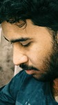

Undergraduate Student, CSE, BRAC University
Dhaka, Bangladesh
I am Md. Foysal Ferdous, currently pursuing a BSc in Computer Science and Engineering at BRAC University, Dhaka, with a strong focus on Artificial Intelligence, Machine Learning, and Competitive Programming. My academic journey has been shaped by curiosity, discipline, and a desire to solve challenging problems with creative solutions. From an early age, I have been fascinated by the intersection of algorithms, data, and real-world applications, which led me to dive deep into computer science during my secondary education.
My foundational education began at Noubahini School and College in Khulna, where I developed strong analytical and problem-solving skills. I then continued my higher secondary education at Khulna Public College, where my interest in programming and logical reasoning flourished. These early experiences provided me with a solid academic base and instilled a passion for learning that continues to drive me today.
At BRAC University, I have focused on building a well-rounded skill set in both theoretical and applied aspects of computer science. My coursework and projects have included areas such as algorithm design, data structures, machine learning models, and computer vision applications. In parallel, I actively engage in competitive programming, participating in online contests and honing my ability to think critically and optimize solutions under time constraints.
Beyond academics, I am deeply interested in exploring research opportunities in AI and ML, aiming to contribute to projects that have real-world impact. I enjoy working on collaborative projects, learning from peers, and experimenting with innovative ideas that push the boundaries of technology. When I’m not coding or studying, I like to follow tech blogs, participate in online forums, and stay updated with the latest trends in software development and AI research.
With a commitment to continuous growth, I aim to combine my strong academic foundation, practical coding expertise, and passion for innovation to make meaningful contributions in the field of computer science. My journey so far has been fueled by curiosity, discipline, and a drive to solve complex problems, and I am eager to continue this path, learning, building, and creating projects that matter.